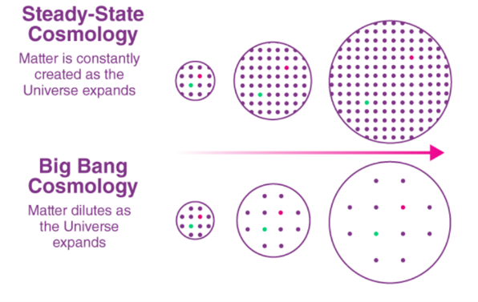
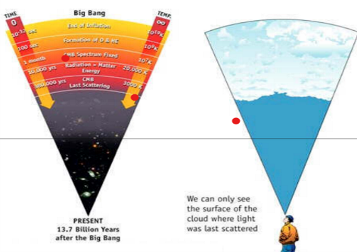
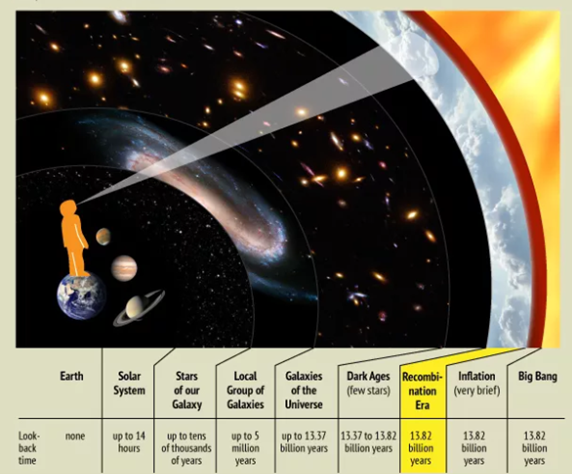
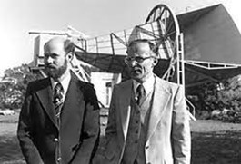
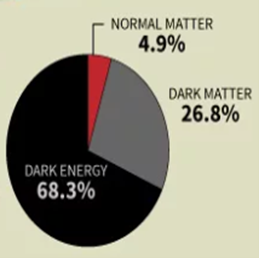
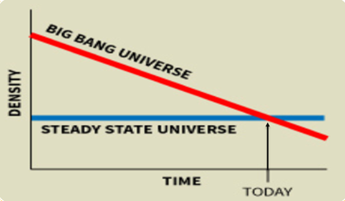
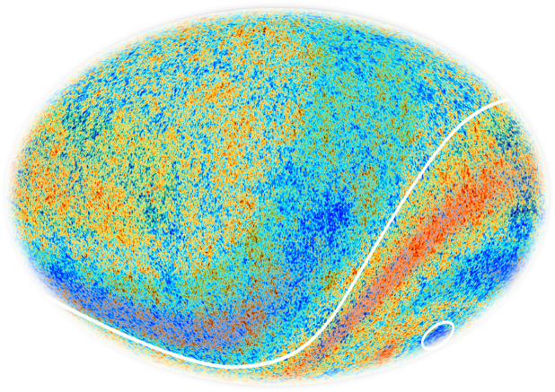
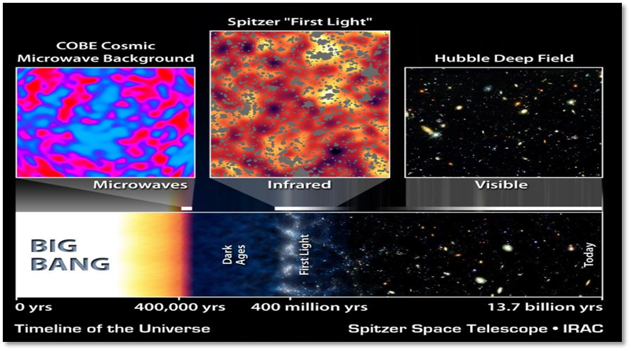
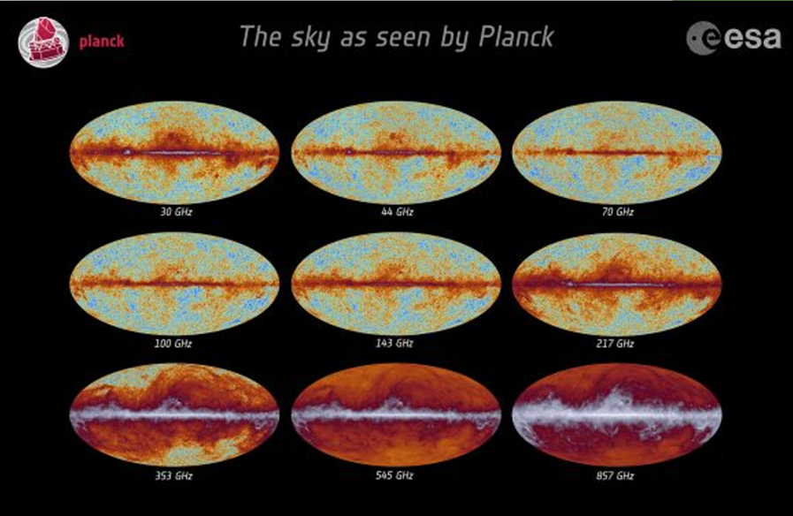
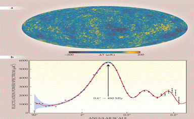

“The next time you complain that there is nothing on, remember that you can always watch the birth of the universe.”
— Bill Bryson
For thousands of years, human being has been contemplating the Universe and seeking to determine its true extent. And whereas ancient philosophers believed that the world consisted of a disk, a ziggurat or a cube surrounded by celestial oceans or some kind of ether, the development of modern astronomy opened their eyes to new frontiers. By the 20th century, scientists began to understand just how vast the Universe really is!
The Thinking Before the Big Bang
Until the 1960s, most scientists believe that the Steady State Theory: “A theory in which the universe is assumed to have properties that are constant in space and time, so that new matter must be continuously and spontaneously created to maintain average densities as the universe expands.”
This was the idea that galaxies were being pushed apart by matter leaking into the universe through holes.

Let’s can understand this in a simple way, (i) the universe is eternal and essentially unchanging. (ii) Galaxies we observe moving away from each other have new ones that develop between them fill the space they leave. (iii) The resulting universe is in a “steady state” in the same manner that a flowing river is — the individual water molecules are moving away but the overall river remains the same.
Background of CMB Discovery
And in the course of looking farther out into space, and deeper back in time, cosmologists have discovered some truly amazing things. For example, during the 1960s, astronomers became aware of microwave background radiation that was detectable in all directions. Known as the Cosmic Microwave Background (CMB), the existence of this radiation has helped to inform our understanding of how the Universe began.
The CMB is central to the Big Bang Theory and modern cosmological models (such as the Lambda-CDM model). As the theory goes, when the Universe was born 13.8 billion years ago, all matter was condensed onto a single point of infinite density and extreme heat. Due to the extreme heat and density of matter, the state of the Universe was highly unstable. Suddenly, this point began expanding, and the Universe as we know it began.

Here, in this diagram, we can see, the cosmic microwave background radiation’s “surface of last scatter” is analogous to the light coming through the clouds to our eye on a cloudy day.
What is CMB?
Looking out into deep space, and therefore back into deep time, astronomers see the CMB radiation saturating space beginning at about 3,80,000 years after Big-Bang. Before the creation of the CMB, the universe was a hot, dense and opaque plasma containing both matter and energy. Photons could not travel freely, so no light escape from those earlier times. And this time period known as the ‘Dark Age’.
The CMB was created at a time in cosmic history called Recombination Era. The universe had cooled to a temperature of about 5K degrees Fahrenheit (or, 2.7K degree Celsius), cool enough for electrons and protons to “recombine” into hydrogen atoms. Photons were released, and today this radiation is called Cosmic Microwave Background (CMB)

The CMB is essentially electromagnetic radiation that is left over from the earliest cosmological epoch which permeates the entire Universe. It is believed to have formed about 3,80,000 years after the Big Bang and contains subtle indications of how the first stars and galaxies formed. While this radiation is invisible using optical telescopes, radio telescopes are able to detect the faint signal that is strongest in the microwave region of the radio spectrum.
The CMB is visible at a distance of 13.8 billion light years in all directions from Earth, leading scientists to determine that this is the true age of the Universe. However, it is not an indication of the true extent of the Universe. Given that space has been in a state of expansion ever since the early Universe (and is expanding faster than the speed of light), the CMB is merely the farthest back in time we are capable of seeing.
Pigeon’s Role to Discover the CMB
The CMB was first found by an accident. In 1965, two researchers with Bell Telephone Laboratories (Arno Penzias and Robert Wilson) were creating a radio receiver, and were puzzled by the mysterious noise of unknown origin, it was picking up. At first, the noise was thought to be interference caused by pigeon droppings on the antenna equipment. Pigeons were trapped and dung was cleaned from the antenna.

Ultimately, Penzias and Wilson realized that the noise was an actual signal. They soon realized the noise came uniformly from all over the sky. At the same time, a team at Princeton University (led by Robert Dicke) was trying to find the CMB. Dicke’s team got wind of the Bell experiment and realized the CMB had been found. Later, Penzias and Wilson both received the Nobel Prize in physics in 1978.
What does the CMB tell us about the Universe?
The geometry of the universe.
Whether the universe will expand or collapse.
How much matter there is in the universe.
Amount and nature of dark matter and dark energy.
Expansion rate of the universe.
Age of the universe.
The origins of galaxies and galaxy clusters.

Proof of the Big-Bang
By the mid-20th century, there were two competing theories for the origin of the universe. The Steady State theory and The Big-Bang theory. The Big Bang theory stated that the expanding universe must have been denser in the past, and therefore at the very beginning must have been a point of infinite density.

Penzias and Wilson theorized that if the Big Bang theory was correct, the universe would be filled with background radiation left over from the creation event.
What CMB tells the Astronomers?
In this all-sky image of the CMB radiation, tiny differences in temperature are exaggerated. The curve line is the border between the northern and southern hemispheres of the sky. Overall, the data confirm that the standard Big-Bang theory is correct, but there are still some anomalies.

The southern hemisphere appears redder, therefore slightly warmer, than the northern hemisphere. The circled area is a “cold spot” in the southern hemisphere appears larger than was expected. The standard model of the Big Bang theory predicts that the CMB radiation should look mostly the same in every direction.
The CMB also provides insight into the composition of the universe as a whole. Most of the universe is made up of dark energy, the mysterious force that drives the accelerating expansion of the universe. The next largest ingredient is dark matter, which only interacts with the rest of the universe through its gravity.
Normal matter, including all the visible stars, planets and galaxies, makes up less than 5% of the total mass of the universe.
History of CMB
The existence of the CMB was first theorized by Ukrainian-American physicist George Gamow, along with his students, Ralph Alpher and Robert Herman, in 1948. This theory was based on their studies of the consequences of nucleosynthesis of light elements (like, hydrogen, helium and lithium) during the very early Universe. Essentially, they realized that in order to synthesize the nuclei of these elements, the early Universe needed to be extremely hot.
During the 1980s, ground-based instruments placed increasingly stringent limits on the temperature differences of the CMB. These included the Soviet RELIKT-1 mission aboard the Prognoz 9 satellite and the NASA Cosmic Background Explorer (COBE) mission. Fortheir work, the COBE team received the Nobel Prize in physics in 2006.


CMB’s first acoustic peak
COBE also detected the CMB’s first acoustic peak, acoustical oscillations in the plasma which corresponds to large-scale density variations in the early universe created by gravitational instabilities. Many experiments followed over the next decade, which consisted of ground and balloon-based experiments whose purpose was to provide more accurate measurements of the first acoustic peak.

The second acoustic peak was tentatively detected by several experiments, but was not definitively detected until the Wilkinson Microwave Anisotropy Probe (WMAP) was deployed in 2001.